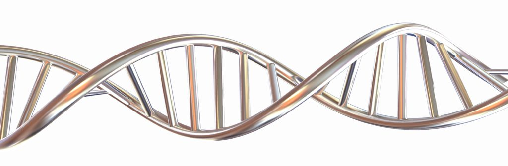
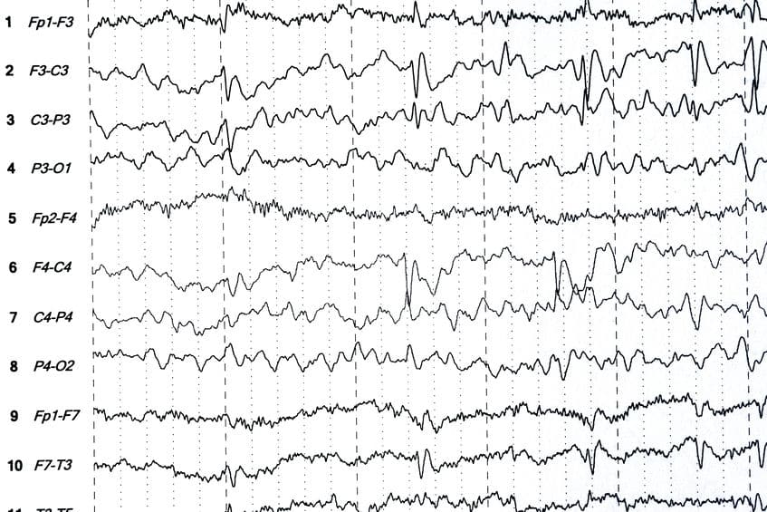

This project uses a generative adversarial network (GAN) to create entirely new MRI of brain tumors. It uses a dataset of around 200 images to train the network and produces accurate images in under 45 minutes. The goal of this project was to showcase an innovative example of how AI can be used within the field of medicine.
This project uses natural language processing (NLP) to search a diverse database in order to create a new BioBrick. It does this by translating user inputs to parts in the database, then trying to piece together an entirely new part, or composite BioBrick. The goal of this project was to merge the fields of synthetic biology and AI to see if a computer can generate a successful BioBrick part based on user inputs.

Creating New Composite BioBricks with NLP

Using Brainwaves to Control a Music Playlist
This project uses the EEG Muse headband to measure concentration levels in the brain in order to perform a task, which in this case is changing a song in a playlist. The goal of this project was to test the accuracy and visualize the use cases of modern day EEG technology in every day life.
In this project, I build an IoT smart room with multiple devices that any automated room should have. The goal of this project was to test how easily a smart room can be built on your own and with minimal equipment.